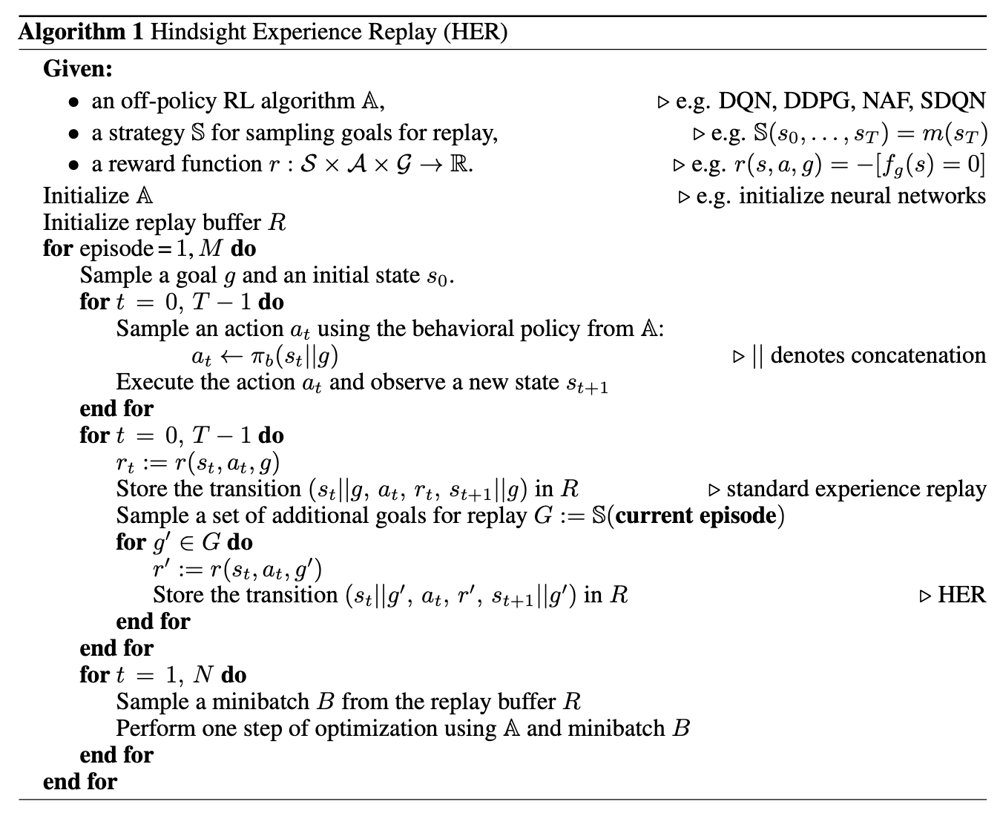
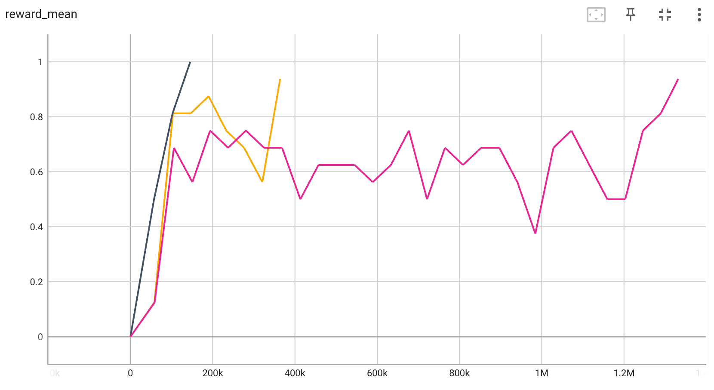
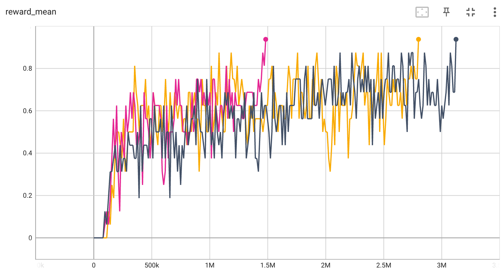

HER¶
Overview¶
HER(Hindsight Experience Replay) was first proposed in Hindsight Experience Replay to deal with the challenge caused by sparse reward. HER can be easily combined with any off-policy RL algorithm, allowing sample-efficient learning from rewards which are sparse and binary and therefore avoid the need for complicated reward engineering.
HER’s core is to learn from failures. HER proposes that even if a task’s final goal is not achieved, the episode is still of use, because other goals might be achieved by the way. So HER creates a new episode from the original episode, labeling the new one with new rewards by changing the desired task goal.
Quick Facts¶
HER is not a seperate algorithm, it can be combined with any off-policy algorithm.
HER needs to define rewards after changing the desired goal, but it does not need to be the same as the env’s reward function.
In DI-engine’s implementation, HER collects episode data and push into buffer, then samples episodes and modifies the reward, which will be explained in detail in Pseudo-code part.
HER has different strategies to create a virtual goal. They all come from the same episode as the transition being replayed, but differ as follows:
future: a state after the transition
episode: any state in the episode
final: the final state of the episode
Pseudo-code¶
{kind=link}
Note
Compared with psuedo code proposed in the original paper, DI-engine adopts a slightly different way to implement HER. In original paper, before the transition is pushed into buffer, it will be used to create several transitions with different goals. However there are two disadvantages: 1) Memory waste. All transitions(Original one and virtual ones) are all stored in the buffer. 2) Fixed dataset. Once the transitions are pushed into buffer, they will not be changed.
Thus, in DI-engine, we first push original transitions(in whole episode format) in the buffer. After episodes are sampled out, we will start to create more transitions based on virtual goals. Goals are randomly created at every sampling, so even if the same episode is sampled out several times, the created new training data will not be the same.
Implementations¶
The implementation in DI-engine is not in ding.policy as many other algorithms, but in ding.reward_model.her_reward_model:
- class ding.reward_model.her_reward_model.HerRewardModel(cfg: dict, cuda: bool = False)[source]
- Overview:
Hindsight Experience Replay model.
Note
her_strategy (
str): Type of strategy that HER uses, should be in [‘final’, ‘future’, ‘episode’]her_replay_k (
int): Number of new episodes generated by an original episode. (Not used in episodic HER)episode_size (
int): Sample how many episodes in one iteration.sample_per_episode (
int): How many new samples are generated from an episode.
Note
In HER, we require episode trajectory to change the goals. However, episode lengths are different and may have high variance. As a result, we recommend that you only use some transitions in the complete episode by specifying
episode_sizeandsample_per_episodein config. Therefore, in one iteration,batch_sizewould beepisode_size*sample_per_episode.
Benchmark¶
environment |
best mean reward |
evaluation results |
config link |
|---|---|---|---|
BitFLip-15bit |
0.9 |
 | |
BitFLip-20bit |
0.9 |
 |
P.S.
The above results are obtained by running the same configuration on 3 different random seeds (0, 1, 2)
Reference¶
Andrychowicz M, Wolski F, Ray A, et al. Hindsight experience replay[J]. arXiv preprint arXiv:1707.01495, 2017.